Workshop Manual ➭ DRIVELINE/AXLE ➭ DIFFERENTIAL ➭ REAR DIFFERENTIAL DISASSEMBLY
REAR DIFFERENTIAL DISASSEMBLY
id031400800500
{: #wp1059776}
Warning
• The engine stand is equipped with a self-lock mechanism, however, if the rear differential is tilted, the self-lock mechanism could become inoperative. If the rear differential unexpectedly rotates, it could cause injury, therefore do not maintain the rear differential tilted. When turning the rear differential, grasp the rotation handle firmly.
- Disassemble in the order indicated in the table.{: #wp1059796}
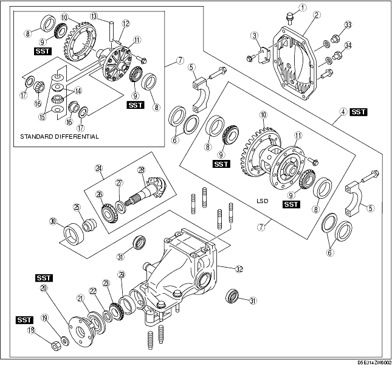
|
Breather plug {: #wp1059837} |
|
|---|---|
|
2 {: #wp1059875} |
Rear cover {: #wp1059878} |
|
3 {: #wp1059882} |
Baffle plate {: #wp1059885} |
|
4 {: #wp1059919} |
Differential component {: #wp1059922} (See Differential Component Disassembly Note.) {: #wp1059938} |
|
5 {: #wp1059950} |
Bearing cap {: #wp1059953} (See Bearing Cap Disassembly Note.) {: #wp1059971} |
|
6 {: #wp1059983} |
Adjustment shim {: #wp1059986} (See Adjustment Shim, Side Bearing Outer Race Disassembly Note.) {: #wp1060006} |
|
7 {: #wp1060018} |
Differential gear case component {: #wp1060021} |
|
8 {: #wp1060041} |
Side bearing outer race {: #wp1060044} (See Adjustment Shim, Side Bearing Outer Race Disassembly Note.) {: #wp1060066} |
|
9 {: #wp1060078} |
Side bearing {: #wp1060081} (See Side Bearing Disassembly Note.) {: #wp1060105} |
|
10 {: #wp1060117} |
Ring gear {: #wp1060120} |
|
11 {: #wp1060144} |
Gear case {: #wp1060147} |
|
12 {: #wp1060171} |
Roll pin {: #wp1060174} (See Roll Pin Disassembly Note.) {: #wp1060200} |
|
13 {: #wp1060212} |
Pinion shaft {: #wp1060215} |
|
14 {: #wp1060241} |
Pinion gear {: #wp1060244} |
|
15 {: #wp1060270} |
Thrust washer {: #wp1060273} |
|
16 {: #wp1060299} |
Side gear {: #wp1060302} |
|
17 {: #wp1060328} |
Washer {: #wp1060331} |
|
18 {: #wp1060357} |
Locknut {: #wp1060360} (See Locknut Disassembly Note.) {: #wp1060388} |
|
19 {: #wp1060400} |
Washer {: #wp1060403} |
|
20 {: #wp1060431} |
Companion flange {: #wp1060434} (See Companion Flange Disassembly Note.) {: #wp1060464} |
|
21 {: #wp1060476} |
Oil seal (companion flange) {: #wp1060479} |
|
22 {: #wp1060509} |
Spacer {: #wp1060512} |
|
23 {: #wp1060542} |
Front bearing {: #wp1060545} |
|
24 {: #wp1060575} |
Drive pinion component {: #wp1060578} (See Drive Pinion Component Disassembly Note.) {: #wp1060610} |
|
25 {: #wp1060622} |
Collapsible spacer {: #wp1060625} |
|
26 {: #wp1060657} |
Rear bearing {: #wp1060660} (See Rear Bearing Disassembly Note.) {: #wp1060694} |
|
27 {: #wp1060706} |
Spacer {: #wp1060709} |
|
28 {: #wp1060743} |
Drive pinion {: #wp1060746} |
|
29 {: #wp1060780} |
Front bearing outer race {: #wp1060783} (See Front Bearing Outer Race, Rear Bearing Outer Race Disassembly Note.) {: #wp1060819} |
|
30 {: #wp1060831} |
Rear bearing outer race {: #wp1060834} (See Front Bearing Outer Race, Rear Bearing Outer Race Disassembly Note.) {: #wp1060872} |
|
31 {: #wp1060884} |
Oil seal (side gear) {: #wp1060887} |
|
32 {: #wp1060925} |
Differential carrier {: #wp1060928} |
|
33 {: #wp1060966} |
Oil-fill plug {: #wp1060969} |
|
34 {: #wp1061008} |
Drain plug {: #wp1061011} |
Differential Component Disassembly Note
- Install the differential component to the SSTs.{: #wp1061109}
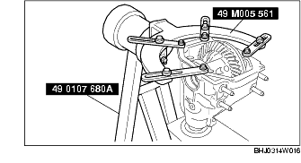
Bearing Cap Disassembly Note
- Mark the bearing cap and differential carrier for proper installation.{: #wp1061165}
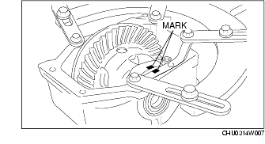
Adjustment Shim, Side Bearing Outer Race Disassembly Note
- Remove the adjustment shim using a flathead screwdriver.{: #wp1061202}
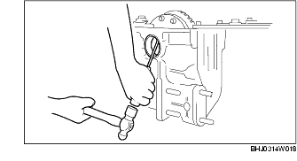
- Put left and right identification marks on the removed adjustment shims and side bearing outer races.{: #wp1061229}
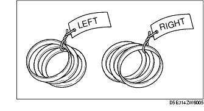
Side Bearing Disassembly Note
- Remove the side bearing using the SST.{: #wp1061266}
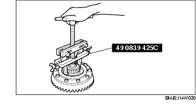
- Put left and right identification marks on the removed side bearings.
Roll Pin Disassembly Note
- Tap the roll pin out from the direction shown in the figure using a pin punch.{: #wp1061322}
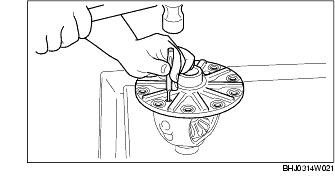
Locknut Disassembly Note
- Remove the locknut while fixing the companion flange using the SST.{: #wp1061359}
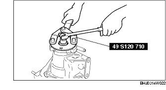
Companion Flange Disassembly Note
- Remove the companion flange using the SST.{: #wp1061405}
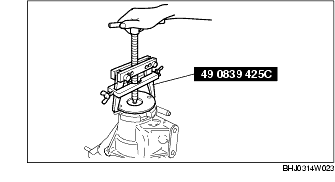
Drive Pinion Component Disassembly Note
- Install the removed locknut to the drive pinion top to prevent damage to the thread.{: #wp1061451}
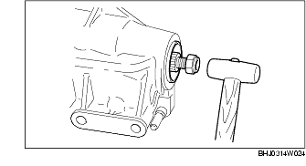
-
Remove the drive pinion component by tapping the locknut lightly using a plastic hammer.
-
Remove the locknut installed in Step 1.
Rear Bearing Disassembly Note
Caution
• The drive pinion could be damaged if it falls off. Support the drive pinion with your hand when removing the rear bearing.
- Remove the rear bearing using the SST and a press.{: #wp1061526}
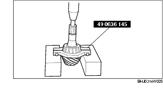
Front Bearing Outer Race, Rear Bearing Outer Race Disassembly Note
- Remove the bearing outer race by lightly tapping the edge of the bearing outer race using a flathead screwdriver.{: #wp1061572}
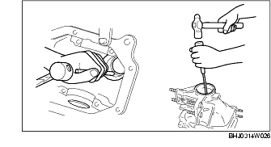